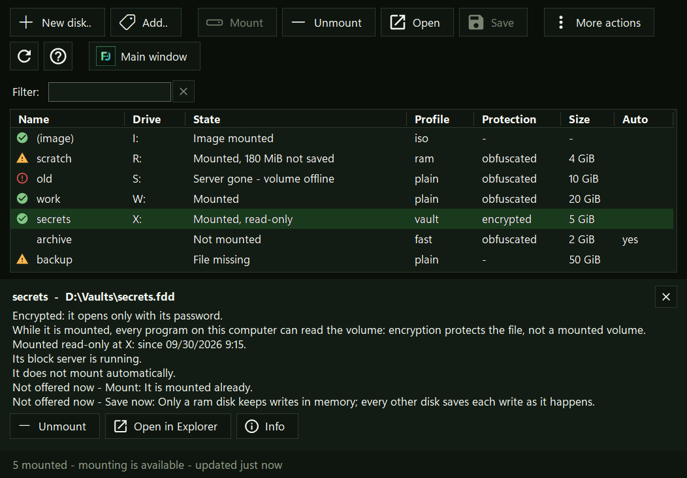
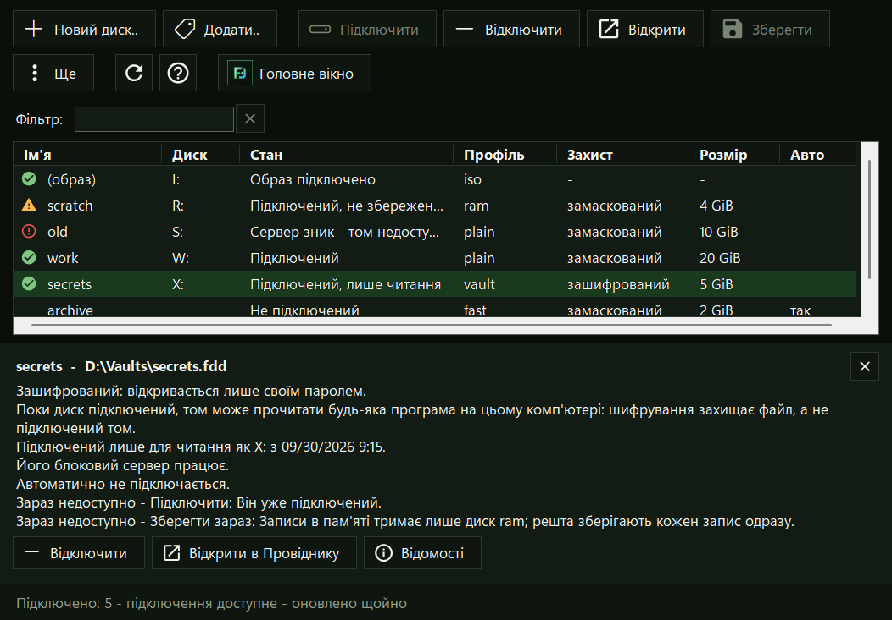
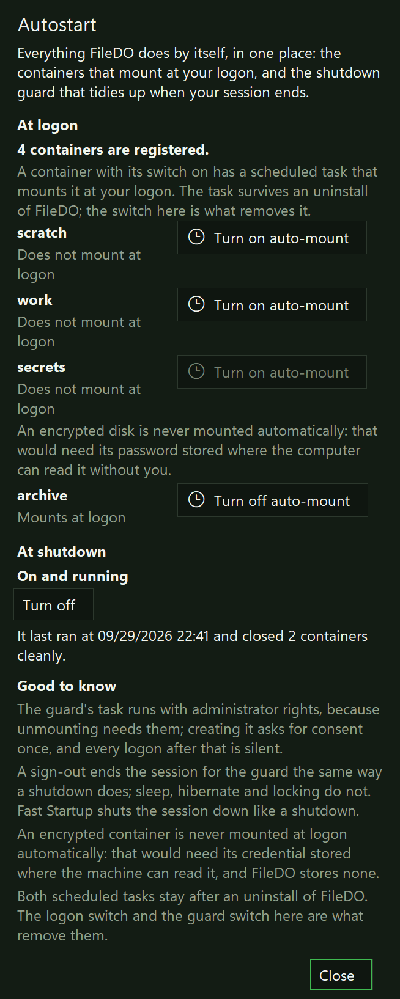
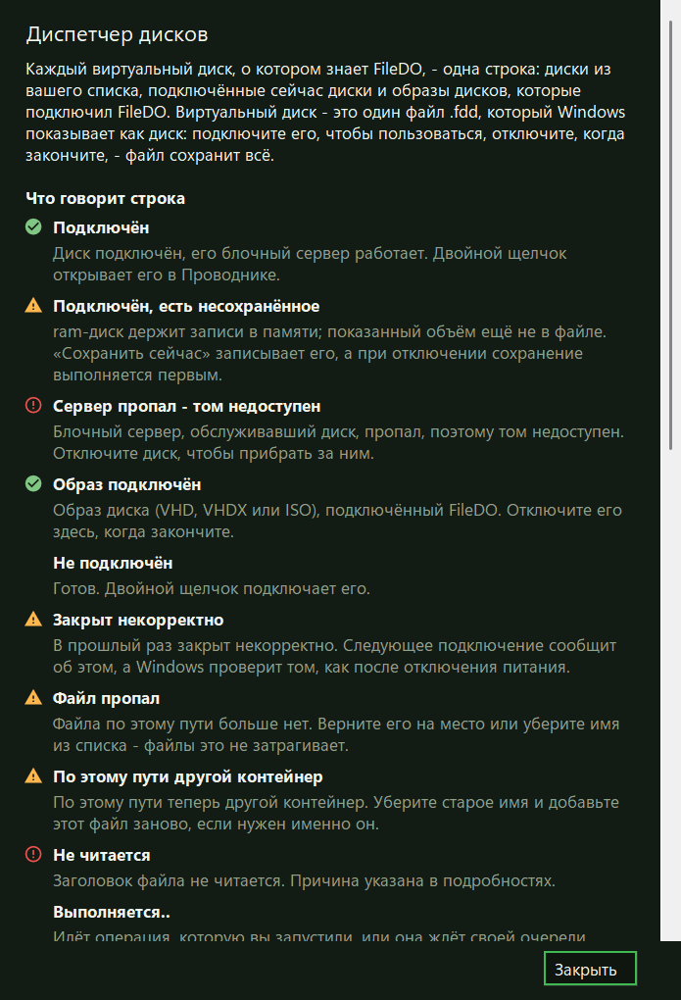
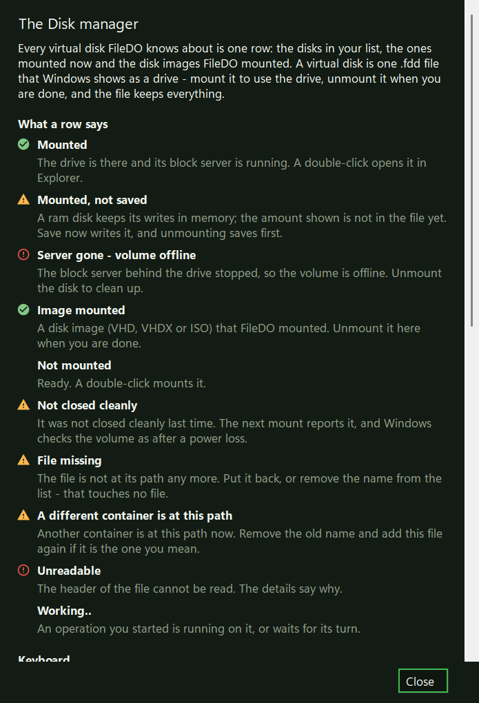
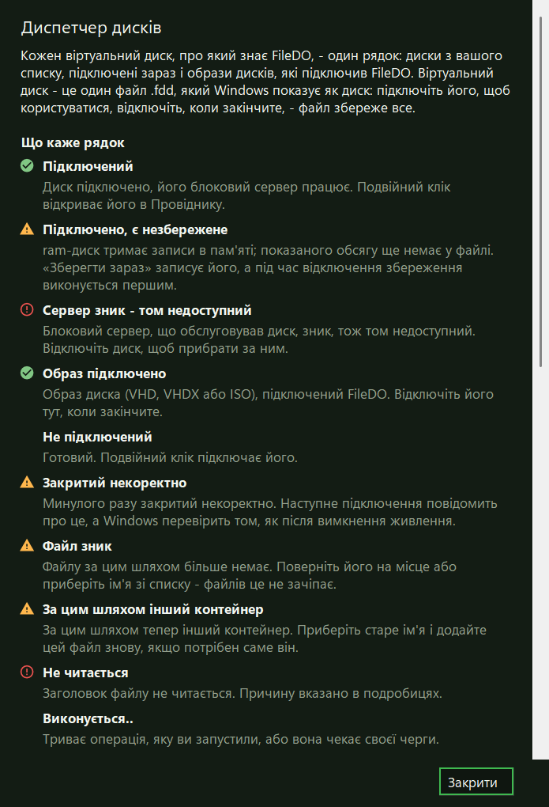
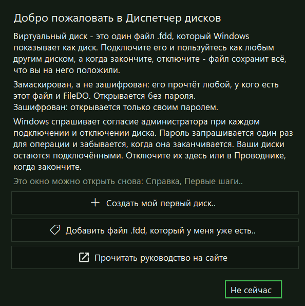
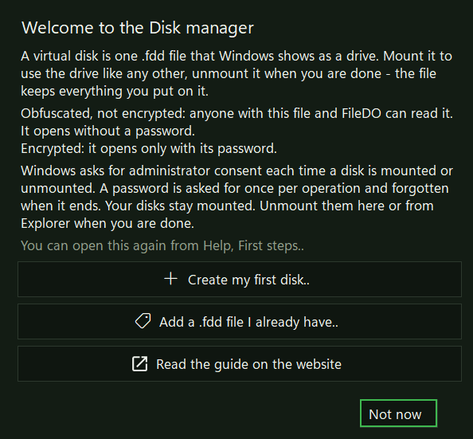
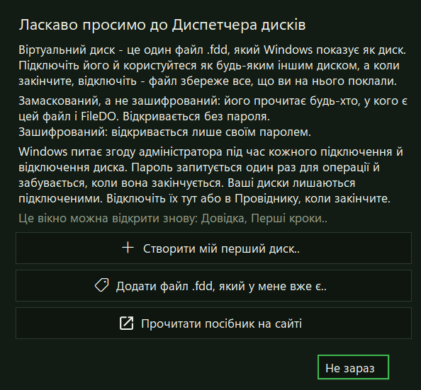

Руководство · виртуальные дискиGuide · virtual disksПосібник · віртуальні диски
Целый диск в одном файле - подключается буквой, когда нужно, и
читается без подключения, когда нет.A whole disk in one file - a drive letter when you want one, and
readable without mounting when you do not.Цілий диск в одному файлі - підключається літерою, коли треба, і
читається без підключення, коли ні.
Контейнер .fdd - это обычный файл, в котором лежит
целый том. Подключённый, он становится буквой диска, как любой
другой; отключённый - это файл, который можно копировать, хранить в
резервной копии и читать одним FileDO, без подключения. Формат
опубликован полностью - как контракт FDD-FORMAT, а то,
что обязана делать читающая или пишущая его программа, - как
FDD-BEHAVIOUR, - поэтому данные не зависят от того,
останется ли FileDO.A .fdd container is one ordinary file that holds a
whole volume. Mounted, it is a drive letter like any other;
unmounted, it is a file you can copy, back up and read with FileDO
alone, without mounting it. The format is published in full as the
FDD-FORMAT contract, and what a program that reads or
writes one must do as FDD-BEHAVIOUR, so the data does
not depend on FileDO staying around.Контейнер .fdd - це звичайний файл, у якому лежить
цілий том. Підключений, він стає літерою диска, як будь-який
інший; відключений - це файл, який можна копіювати, зберігати в
резервній копії й читати самим FileDO, без підключення. Формат
опубліковано повністю - як контракт FDD-FORMAT, а те,
що мусить робити програма, яка його читає чи пише, - як
FDD-BEHAVIOUR, - тож дані не залежать від того, чи
лишиться FileDO.
Новый контейнер на 20 ГБ. Существующий файл никогда не
перезаписывается. Первое подключение форматирует том в
NTFS.A new 20 GB container. An existing file is never overwritten.
The first mount formats the volume NTFS.Новий контейнер на 20 ГБ. Наявний файл ніколи не
перезаписується. Перше підключення форматує том у NTFS.
filedo vd new work.fdd 20G
ПодключитьMountПідключити
На первую свободную букву; ro - только для чтения,
as X: - на выбранную букву. Windows спросит
согласие администратора.At the first free letter; ro for read-only,
as X: for a letter of your choice. Windows asks for
administrator consent.На першу вільну літеру; ro - лише для читання,
as X: - на вибрану літеру. Windows запитає згоду
адміністратора.
filedo work.fdd mount
ОтключитьUnmountВідключити
Всё несохранённое записывается, контейнер помечается как
закрытый корректно, и только потом буква уходит.Everything pending is saved and the container is marked closed
cleanly before the letter goes.Усе незбережене записується, контейнер позначається як
коректно закритий, і лише потім літера зникає.
filedo X: unmount
Четыре профиляFour profilesЧотири профілі
plain растёт по мере записи. fast сразу
занимает весь размер, чтобы запись никогда не ждала роста файла.
ram держит том в памяти, пока он подключён, и
сохраняет его в файл каждые несколько секунд: сбой или отключение
питания теряют всё, что записано после последнего сохранения.
vault всегда зашифрован и потому всегда требует
пароль. Любой профиль с паролем (p: или вопрос)
зашифрован; без пароля - замаскирован, а не зашифрован.plain grows as data is written. fast
takes the whole size now, so a write never waits for the file to
grow. ram keeps the volume in memory while it is
mounted and saves it to the file every few seconds: a crash or a
power loss loses what was written since the last save.
vault is always encrypted, so it always needs a
password. Any profile given a password (p: or the
prompt) is encrypted; without one it is obfuscated, not
encrypted.plain росте в міру запису. fast одразу
займає весь розмір, щоб запис ніколи не чекав, поки файл виросте.
ram тримає том у пам'яті, поки він підключений, і
зберігає його у файл кожні кілька секунд: збій або вимкнення
живлення втрачають усе, що записано після останнього збереження.
vault завжди зашифрований, тому завжди потребує
пароля. Будь-який профіль із паролем (p: або
запит) зашифрований; без пароля - замаскований, а не
зашифрований.
filedo vd new private.fdd 5G vault
Прочитать, не подключаяRead without mountingПрочитати, не підключаючи
Этим трём командам не нужны ни права администратора, ни iSCSI, ни
сеть, и в сам контейнер они ничего не пишут. Они работают в каждой
сборке, включая сборку из Microsoft Store.These three need no administrator rights, no iSCSI and no network,
and they write nothing into the container. They work in every
build, the Microsoft Store one included.Цим трьом командам не потрібні ні права адміністратора, ні iSCSI,
ні мережа, і в сам контейнер вони нічого не пишуть. Вони працюють у
кожній збірці, зокрема у збірці з Microsoft Store.
СведенияInfoВідомості
Профиль, размер, замаскирован он или зашифрован, был ли закрыт
корректно и когда в последний раз полностью сохранён. Пароль не
нужен.Profile, size, whether it is obfuscated or encrypted, whether it
was closed cleanly and when it last saved completely. No
password needed.Профіль, розмір, замаскований він чи зашифрований, чи був
коректно закритий і коли востаннє повністю збережений. Пароль
не потрібен.
filedo work.fdd info
Прочитать целикомVerifyПрочитати цілком
Заголовки, карта и каждый занятый кластер; повреждение - код
выхода 4. Формат 1.0 не хранит контрольных сумм данных, поэтому
данные прочитаны, но не сверены.Headers, the map and every allocated cluster; damage is exit
code 4. Format 1.0 keeps no checksums of the data, so the data
is read, not verified.Заголовки, карта й кожен зайнятий кластер; пошкодження - код
виходу 4. Формат 1.0 не зберігає контрольних сум даних, тому
дані прочитано, але не звірено.
filedo work.fdd verify
Выгрузить образExport an imageВивантажити образ
raw - простой образ диска, vhd -
фиксированный VHD, который Windows подключит сама, без FileDO.
Образ зашифрованного контейнера не зашифрован. Отдельные файлы
в этой сборке выгружаются только через подключение.raw gives a plain disk image, vhd a
fixed VHD that Windows attaches by itself, with no FileDO. The
image of an encrypted container is not encrypted. In this build
single files come out only by mounting.raw - простий образ диска, vhd -
фіксований VHD, який Windows підключить сама, без FileDO. Образ
зашифрованого контейнера не зашифрований. Окремі файли в цій
збірці виходять лише через підключення.
filedo work.fdd export D:\work.vhd vhd
Замаскирован или зашифрованObfuscated or encryptedЗамаскований чи зашифрований
Без пароляWithout a passwordБез пароля
Без пароля контейнер замаскирован, а не зашифрован. Маскировка
прячет том от случайного взгляда и от программ, которые ищут
образы дисков, - и ни от кого, у кого есть файл и FileDO.
FileDO никогда не называет её шифрованием.Without a password a container is obfuscated, not encrypted.
Obfuscation keeps the volume from a casual look and from tools that
scan for disk images - and from nobody who has the file and FileDO.
FileDO never calls it encryption.Без пароля контейнер замаскований, а не зашифрований. Маскування
ховає том від випадкового погляду й від програм, які шукають
образи дисків, - і ні від кого, хто має файл і FileDO. FileDO
ніколи не називає його шифруванням.
С паролемWith a passwordЗ паролем
С паролем контейнер зашифрован: без пароля файл не прочесть.
Восстановления нет - забытый пароль означает потерянный
контейнер. pass меняет пароль, не переписывая
данные, поэтому копии файла, сделанные раньше, по-прежнему
открываются старым паролем.With a password a container is encrypted: the file cannot be read
without it. There is no recovery - a forgotten password is a lost
container. pass changes the password without
rewriting the data, so copies of the file made earlier still open
with the old one.З паролем контейнер зашифрований: без пароля файл не прочитати.
Відновлення немає - забутий пароль означає втрачений контейнер.
pass змінює пароль, не переписуючи дані, тому копії
файлу, зроблені раніше, і далі відкриваються старим
паролем.
filedo private.fdd pass
Снять парольTaking the password offЗняти пароль
Пароль никогда не снимается на месте: пустой новый пароль
отклоняется. Вместо этого clone с
nopass пишет новую замаскированную копию - её прочтёт
любой, у кого есть этот файл и FileDO, - а зашифрованный оригинал
остаётся как был.A password is never removed in place: an empty new password is
refused. Instead, clone with nopass
writes a new, obfuscated copy - anyone who has that file and FileDO
reads it - and the encrypted original stays as it was.Пароль ніколи не знімається на місці: порожній новий пароль
відхилено. Натомість clone з nopass
пише нову замасковану копію - її прочитає будь-хто, хто має цей
файл і FileDO, - а зашифрований оригінал лишається як був.
filedo private.fdd clone open-copy.fdd nopass
Подключённый томA mounted volumeПідключений том
Шифрование защищает файл, а не подключённый том: пока он
подключён, его читает любая программа, которую вы запускаете,
как любой другой диск. ram с паролем: Windows может
выгрузить эту память в файл подкачки, и туда попадут
незашифрованные данные. Новый том создаётся с выключенным
индексированием; mount noscan исключает файл
контейнера из проверки Microsoft Defender на время подключения -
файлы на самом томе проверяются по-прежнему.Encryption protects the file, not a mounted volume: while it is
mounted, every program you run can read it, like any other drive.
ram with a password: Windows may page that memory
out, so unencrypted data can reach the page file. A new volume is
made with indexing off; mount noscan excludes the
container file from Microsoft Defender scanning for the life of
the mount - files on the volume itself are still scanned.Шифрування захищає файл, а не підключений том: поки він
підключений, його читає будь-яка програма, яку ви запускаєте, як
будь-який інший диск. ram з паролем: Windows може
вивантажити цю пам'ять у файл підкачки, і туди потраплять
незашифровані дані. Новий том створюється з вимкненим
індексуванням; mount noscan виключає файл контейнера
з перевірки Microsoft Defender на час підключення - файли на
самому томі перевіряються, як і раніше.
Что нужно от WindowsWhat Windows has to provideЩо потрібно від Windows
Только Windows. Букву диска даёт встроенный в Windows
инициатор iSCSI, который говорит с блочным сервером внутри
filedo.exe. Сервер слушает только адрес 127.0.0.1:
ничего не уходит с этого компьютера, и контейнер никогда не
попадает ни в какую сеть - если только вы сами не откроете к нему
общий доступ (ниже).Windows only. The drive letter comes from the iSCSI
initiator built into Windows, talking to a block server inside
filedo.exe. The server listens on 127.0.0.1 only:
nothing leaves this computer, and the container never goes to any
network - unless you choose to share it (see below).Лише Windows. Літеру диска дає вбудований у Windows
ініціатор iSCSI, який говорить із блоковим сервером усередині
filedo.exe. Сервер слухає лише адресу 127.0.0.1:
ніщо не залишає цей комп'ютер, і контейнер ніколи не потрапляє в
жодну мережу - хіба що ви самі відкриєте до нього спільний доступ
(нижче).
Подключение требует прав администратора.mount, unmount, save, format, chkdsk и
vd auto просят у Windows согласие администратора - на
настройку инициатора, и только на неё: пароль туда не передаётся,
а сам блочный сервер никогда не работает с повышенными правами.
Пакетный файл такого запроса не показывает - запускайте его из
консоли администратора. Если службой «Инициатор iSCSI
(Майкрософт)» воспользоваться нельзя или согласия нет, запуск
заканчивается кодом 7, и ничего не подключено.Mounting needs administrator rights.mount,
unmount, save, format, chkdsk and vd auto
ask Windows for administrator consent - for the initiator step,
and for nothing else: the password never goes there, and the block
server itself never runs elevated. A batch never raises that
prompt - run it from an elevated console. If the Microsoft iSCSI
Initiator service cannot be used, or consent is not given, the run
ends with exit code 7 and nothing is mounted.Підключення потребує прав адміністратора.mount, unmount, save, format, chkdsk і
vd auto просять у Windows згоду адміністратора - на
налаштування ініціатора, і лише на нього: пароль туди не
передається, а сам блоковий сервер ніколи не працює з підвищеними
правами. Пакетний файл такого запиту не показує - запускайте його
з консолі адміністратора. Якщо службою «Ініціатор iSCSI
(Microsoft)» скористатися не можна або згоди немає, запуск
закінчується кодом 7, і нічого не підключено.
Сборка из Microsoft Store не может подключать диски.
Упакованное приложение не может ни настроить инициатор iSCSI, ни
попросить права администратора, поэтому там mount,
unmount, save, format, chkdsk,
vd auto, vd guard и vd register заканчиваются
кодом 6 (не поддерживается). info,
verify, export, compact,
grow, seal, clone,
pass, destroy, vd new,
vd list, vd status,
vd add и vd forget работают и там. Для
подключения поставьте установщик или переносимую сборку с
GitHub.The Microsoft Store build cannot mount. A packaged app can
neither configure the iSCSI initiator nor ask for administrator
rights, so there mount, unmount,
save, format, chkdsk, vd auto, vd guard and
vd register end with exit code 6 (unsupported).
info, verify, export,
compact, grow, seal,
clone, pass, destroy,
vd new, vd list,
vd status, vd add and
vd forget work there too. To mount, install the setup
or the portable build from GitHub.Збірка з Microsoft Store не може підключати диски.
Запакований застосунок не може ні налаштувати ініціатор iSCSI, ні
попросити права адміністратора, тому там mount,
unmount, save, format, chkdsk,
vd auto, vd guard і vd register закінчуються
кодом 6 (не підтримується). info,
verify, export, compact,
grow, seal, clone,
pass, destroy, vd new,
vd list, vd status,
vd add і vd forget працюють і там. Для
підключення встановіть інсталятор або переносну збірку з
GitHub.
Подключение переживает окно. Если закрыть окно FileDO с
подключённым диском, буква и её сервер остаются; новое окно
снова покажет их в списке. Отключайте в Диспетчере дисков, на
странице группы «Диски» или командой
filedo X: unmount.A mount outlives the window. Close the FileDO window with a
disk mounted and the letter and its server stay; a new window lists
them again. Unmount in the Disk manager, on the Disks pages, or
with filedo X: unmount.Підключення переживає вікно. Якщо закрити вікно FileDO з
підключеним диском, літера та її сервер лишаються; нове вікно
знову покаже їх у списку. Відключайте в Диспетчері дисків, на
сторінці групи «Диски» або командою
filedo X: unmount.
Общий доступ к диску через Fast Media SorterSharing a disk with Fast Media SorterСпільний доступ до диска через Fast Media Sorter
Если установлена Fast Media Sorter for Windows,
vd share work.fdd on предлагает диск телефонам и
планшетам, которые вы с ней связали, как ещё одну папку;
vd open, vd close и
vd autostart открывают его для них, закрывают и
открывают снова после перезапуска. FileDO не открывает для этого
сетевых соединений - он говорит с той программой по локальному
каналу, а файлы отдаёт она. Зашифрованный диск разблокируется здесь,
на этом компьютере, и никогда с телефона; пока он открыт, его файлы
может читать каждое связанное устройство, а
vd autostart хранит его пароль на этом компьютере,
защищённым для той программы, пока вы не выключите автозапуск, не
прекратите доступ или не смените пароль. Общий диск держит та
программа, поэтому mount отказывает, пока она его
держит; vd status говорит, кто держит. Только серверная
редакция Fast Media Sorter for Windows держит общие диски
доступными, когда никто не вошёл в систему.If Fast Media Sorter for Windows is installed,
vd share work.fdd on offers a disk to the phones and
tablets you paired with it, as one more folder;
vd open, vd close and
vd autostart open it for them, close it, and open it
again after a restart. FileDO opens no network connection for this -
it talks to that program over a local pipe, and that program serves
the files. An encrypted disk is unlocked here, on this PC, never
from the phone; while it is open, every paired device can read its
files, and vd autostart keeps its password on this PC,
protected for that program, until you turn autostart off, stop
sharing or change the password. A shared disk is held by that
program, so mount refuses it while it does;
vd status says who holds it. Only the Server edition of
Fast Media Sorter for Windows keeps shared disks available with
nobody signed in.Якщо встановлено Fast Media Sorter for Windows,
vd share work.fdd on пропонує диск телефонам і
планшетам, які ви з нею зв'язали, як ще одну теку;
vd open, vd close і
vd autostart відкривають його для них, закривають і
відкривають знову після перезапуску. FileDO не відкриває для цього
мережевих з'єднань - він говорить із тією програмою через локальний
канал, а файли віддає вона. Зашифрований диск розблоковується тут,
на цьому комп'ютері, і ніколи з телефона; поки він відкритий, його
файли може читати кожен зв'язаний пристрій, а
vd autostart зберігає його пароль на цьому комп'ютері,
захищеним для тієї програми, доки ви не вимкнете автозапуск, не
припините доступ або не змінете пароль. Спільний диск тримає та
програма, тому mount відмовляє, поки вона його тримає;
vd status каже, хто тримає. Лише серверна редакція Fast
Media Sorter for Windows тримає спільні диски доступними, коли ніхто
не ввійшов у систему.
Пошаговая инструкция - установка той программы, регистрация диска,
что видят сопряжённые устройства и восстановление после ошибки - на
отдельной странице
общего доступа через Fast Media Sorter
& Sharing.The step-by-step instructions - installing that program,
registering a disk, what paired devices see and recovery after a
failed step - are on a separate page,
sharing through Fast Media Sorter
& Sharing.Покрокова інструкція - встановлення тієї програми, реєстрація
диска, що бачать сполучені пристрої та відновлення після помилки -
на окремій сторінці
спільного доступу через Fast Media
Sorter & Sharing.
Изменить контейнерChanging a containerЗмінити контейнер
Только отключённый: подключённый контейнер отклоняется с кодом 8, и
этот запрет не снимает ни один ключ. grow 40G
увеличивает диск - том внутри расширяется при следующем подключении
(«Расширить том» в «Управлении дисками»). compact
возвращает диску неиспользуемое место файла. seal
пишет копию только для чтения навсегда, clone -
записываемую копию со своим идентификатором. format
стирает том (fs ntfs или fs exfat),
destroy удаляет файл контейнера, а с
wipe сначала его затирает. Оба сначала спрашивают;
force пропускает вопрос, но не проверку, а пакетный
файл без force их не выполнит. chkdsk
проверяет том внутри неподключённого контейнера и ничего не пишет;
chkdsk fix запускает для него chkdsk /f
- исправление для контейнера, закрытого некорректно, - и сначала
спрашивает.Unmounted only: a mounted container is refused with exit code 8,
and no flag skips that check. grow 40G makes the disk
larger - the volume inside is extended at the next mount (Disk
Management, Extend Volume). compact gives the file's
unused space back to the drive. seal writes a copy that
is read-only for good, clone a writable copy with its
own identity. format erases the volume
(fs ntfs or fs exfat), destroy
removes the container file, and with wipe overwrites
it first. Both ask first; force skips the question,
never the check, and a batch without force does not
run them. chkdsk scans the volume inside an unmounted
container and writes nothing; chkdsk fix runs
chkdsk /f on it - the repair for a container that was
not closed cleanly - and asks first.Лише відключений: підключений контейнер відхилено з кодом 8, і цю
заборону не знімає жоден ключ. grow 40G збільшує диск
- том усередині розширюється під час наступного підключення
(«Розширити том» у «Керуванні дисками»). compact
повертає диску невикористане місце файлу. seal пише
копію лише для читання назавжди, clone - записувану
копію з власним ідентифікатором. format стирає том
(fs ntfs або fs exfat),
destroy видаляє файл контейнера, а з
wipe спершу його затирає. Обидва спочатку питають;
force пропускає питання, але не перевірку, а пакетний
файл без force їх не виконає. chkdsk
перевіряє том усередині непідключеного контейнера й нічого не
пише; chkdsk fix запускає для нього
chkdsk /f - виправлення для контейнера, закритого
некоректно, - і спочатку питає.
Коды выхода одной команды над контейнером: 0 готово, 2 команда
отклонена как написана, 3 неверный пароль, 4 повреждение, 5 ошибка
чтения или записи, 6 не поддерживается, 7 транспорт недоступен, 8
занят. Пакетный файл сохраняет свои 0/1/2.Exit codes of one container command: 0 done, 2 refused as written,
3 wrong password, 4 damaged, 5 a read or write failed, 6
unsupported, 7 transport unavailable, 8 busy. A batch keeps its
0/1/2.Коди виходу однієї команди над контейнером: 0 готово, 2 команду
відхилено як написано, 3 хибний пароль, 4 пошкодження, 5 помилка
читання чи запису, 6 не підтримується, 7 транспорт недоступний, 8
зайнятий. Пакетний файл зберігає свої 0/1/2.
Диски-разделыPartition disksДиски-розділи
Виртуальный диск может жить не только в файле, но и в разделе.
FileDO создаёт новый раздел GPT в нераспределённом пространстве
диска и целиком заполняет его одним контейнером; за пределами этого
свободного места ничего не меняется - FileDO никогда не преобразует
существующий раздел, не меняет его размер и не пишет в него. Только
диски GPT: диски MBR, динамические диски, дисковые пространства
(Storage Spaces), диски iSCSI, съёмные и USB-диски отклоняются, и
vd disks называет причину для каждого. Вы получаете
диск, который не держит никакая файловая система-хозяин, которому
Windows не даёт букву и не предлагает отформатировать, с заранее
закреплённым местом; чего вы не получаете - так это
скорости.A virtual disk can also live in a partition instead of a file.
FileDO creates a new GPT partition in the unallocated space of a
disk and fills it, whole, with one container; nothing outside that
free space is changed - FileDO never converts, resizes or writes
into an existing partition. GPT disks only: MBR, dynamic, Storage
Spaces, iSCSI, removable and USB disks are refused, and
vd disks names the reason for each. What you gain is a
disk that no host file system holds, which Windows does not give a
letter or offer to format, with its space reserved; what you do not
gain is speed.Віртуальний диск може жити не лише у файлі, а й у розділі. FileDO
створює новий розділ GPT у нерозподіленому просторі диска й цілком
заповнює його одним контейнером; поза цим вільним місцем нічого не
змінюється - FileDO ніколи не перетворює наявний розділ, не змінює
його розмір і не пише в нього. Лише диски GPT: диски MBR, динамічні
диски, дискові простори (Storage Spaces), диски iSCSI, знімні та
USB-диски відхиляються, і vd disks називає причину для
кожного. Ви отримуєте диск, який не тримає жодна файлова
система-господар, якому Windows не дає літеру й не пропонує
відформатувати, із заздалегідь закріпленим місцем; чого ви не
отримуєте - то це швидкості.
Найти свободное местоFind the free spaceЗнайти вільне місце
Все диски, их разделы и свободные участки; каждый участок
пригоден или нет, с причиной, а у пригодного - готовая строка
create. Прав администратора не нужно.Every disk, its partitions and its free extents; each extent
usable or not, with the reason, and a usable one with its
create line ready. No administrator rights.Усі диски, їхні розділи й вільні ділянки; кожна ділянка
придатна чи ні, з причиною, а придатна - з готовим рядком
create. Прав адміністратора не треба.
filedo vd disks
СоздатьCreateСтворити
<disk> - это disk:{GUID} или
номер из vd disks; size -
max или размер вроде 40G (вниз до 1
MiB, не меньше 64 MiB). Подтверждение показывает диск, участок и
его соседей. Профиль по умолчанию - fast. Одно
согласие администратора; первое подключение форматирует том в
NTFS.<disk> is disk:{GUID} or the
number from vd disks; size is
max or a size such as 40G (down to 1
MiB, at least 64 MiB). The confirmation shows the disk, the
extent and its neighbours. The default profile is
fast. One administrator consent; the first mount
formats the volume NTFS.<disk> - це disk:{GUID} або
номер із vd disks; size -
max або розмір на кшталт 40G (униз до
1 MiB, не менше 64 MiB). Підтвердження показує диск, ділянку та
її сусідів. Профіль за замовчуванням - fast. Одна
згода адміністратора; перше підключення форматує том у
NTFS.
filedo vd new part disk:{GPT-GUID} size max at <offset> as data
Образ в файлImage to a fileОбраз у файл
Копирует раздел в новый обычный файл .fdd, который
читается без прав администратора, подключается, клонируется и
запечатывается, как любой другой. Подключённый диск
отклоняется; раздел не меняется.Copies the partition into a new, ordinary .fdd file
that reads without administrator rights and mounts, clones and
seals like any other. A mounted disk is refused; the partition is
unchanged.Копіює розділ у новий звичайний файл .fdd, який
читається без прав адміністратора, підключається, клонується й
запечатується, як будь-який інший. Підключений диск
відхиляється; розділ не змінюється.
filedo vd image data to D:\data.fdd
УдалитьDeleteВидалити
Подключённый диск отклоняется. Для подтверждения наберите имя
диска; wipe сначала затирает раздел. Удаляется
только раздел, про который доказано, что он принадлежит FileDO,
и место снова становится нераспределённым.A mounted disk is refused. Type the disk's name to confirm;
wipe overwrites the partition first. Only a
partition proven to be FileDO's is deleted, and the space returns
to unallocated.Підключений диск відхиляється. Для підтвердження наберіть ім'я
диска; wipe спершу затирає розділ. Видаляється лише
розділ, про який доведено, що він належить FileDO, і місце знову
стає нерозподіленим.
filedo vd destroy data
К диску-разделу обращаются по имени или по локатору
fdpart:{GUID}, пути у него нет:
filedo vd mount data. mount,
unmount, save, info,
verify, export, pass,
seal, clone, vd auto и сторож
выключения работают так же, как с файлом; compact и
grow - нет (размер раздела постоянен), а общий доступ
через Fast Media Sorter пока отклоняется.
vd adopt fdpart:{GUID} as data регистрирует раздел
FileDO, которого этот компьютер не знает (диск перенесли с другого
компьютера); vd forget убирает имя и оставляет раздел на
диске. Отклонённый диск заканчивается кодом 6, отказ в согласии -
кодом 7, а разметка, изменившаяся с тех пор, как её показал список, -
кодом 5, и при этом ничего не изменено.A partition disk is addressed by its name or its locator
fdpart:{GUID}, never by a path:
filedo vd mount data. mount,
unmount, save, info,
verify, export, pass,
seal, clone, vd auto and the
shutdown guard work as they do on a file; compact and
grow do not (its size is fixed), and sharing it through
Fast Media Sorter is refused for now.
vd adopt fdpart:{GUID} as data registers a FileDO
partition this PC does not know (a disk moved here from another PC);
vd forget drops the name and leaves the partition on its
disk. A refused disk ends with exit code 6, a declined consent with
exit code 7, and a layout that changed since it was listed with exit
code 5 - with nothing changed.До диска-розділу звертаються за іменем або за локатором
fdpart:{GUID}, шляху в нього немає:
filedo vd mount data. mount,
unmount, save, info,
verify, export, pass,
seal, clone, vd auto і сторож
вимкнення працюють так само, як із файлом; compact і
grow - ні (розмір розділу сталий), а спільний доступ
через Fast Media Sorter поки відхиляється.
vd adopt fdpart:{GUID} as data реєструє розділ FileDO,
якого цей комп'ютер не знає (диск перенесли з іншого комп'ютера);
vd forget прибирає ім'я й лишає розділ на диску.
Відхилений диск закінчується кодом 6, відмова в згоді - кодом 7, а
розмітка, що змінилася відтоді, як її показав список, - кодом 5, і
при цьому нічого не змінено.
Согласие администратора нужно для каждого чтения, а не только
для подключения. Раздел нельзя открыть без прав
администратора, поэтому info, verify,
export, pass, seal,
clone и vd image тоже просят у Windows
согласие. vd image снимает эту необходимость: файл,
который он пишет, - обычный .fdd, и любой путь чтения
открывает его без прав администратора.Administrator consent for every read, not only to mount. A
partition cannot be opened without administrator rights, so
info, verify, export,
pass, seal, clone and
vd image ask Windows for consent too.
vd image removes that need: the file it writes is an
ordinary .fdd that every read path opens without
administrator rights.Згода адміністратора потрібна для кожного читання, а не лише
для підключення. Розділ не можна відкрити без прав
адміністратора, тому info, verify,
export, pass, seal,
clone і vd image теж просять у Windows
згоду. vd image знімає цю потребу: файл, який він
пише, - звичайний .fdd, і будь-який шлях читання
відкриває його без прав адміністратора.
Не быстрее файлового диска. В замере от начала до конца на
накопителе NVMe диск-раздел оказался медленнее файла
.fdd на NTFS. Выбирайте его ради отдельного
закреплённого места, а не ради скорости.Not faster than a file disk. Measured end to end on an NVMe
drive, a partition disk was slower than a .fdd file on
NTFS. Choose it for the fixed, separate space, not for
speed.Не швидший за файловий диск. У вимірі від початку до кінця
на накопичувачі NVMe диск-розділ виявився повільнішим за файл
.fdd на NTFS. Обирайте його заради окремого
закріпленого місця, а не заради швидкості.
fast перезаписывает свободное место,
plain и vault - нет. Всё, что раньше
лежало в свободном месте, остаётся в неиспользуемых кластерах
диска-раздела plain или vault, пока том
не запишет поверх; fast перезаписывает весь раздел
при создании.fast overwrites the free space;
plain and vault do not. Whatever the
free space held before stays in the unused clusters of a
plain or vault partition disk until the
volume writes over it; fast overwrites the whole
partition when it is created.fast перезаписує вільне місце,
plain і vault - ні. Усе, що раніше
лежало у вільному місці, лишається в невикористаних кластерах
диска-розділу plain або vault, доки том
не запише поверх; fast перезаписує весь розділ під
час створення.
«Управление дисками» Windows (diskmgmt.msc)
по-прежнему показывает раздел и может его удалить. Удаление
там удаляет и диск внутри, ни о чём не спрашивая про его
содержимое. Безопасный путь - собственный vd destroy
FileDO: он отказывается работать с подключённым диском, просит
набрать имя диска и удаляет только раздел, про который доказал,
что это раздел FileDO.Windows' Disk Management (diskmgmt.msc) still
shows the partition and can delete it. Deleting it there
deletes the disk inside, with no question about its contents.
FileDO's own vd destroy is the safe way: it refuses a
mounted disk, asks you to type the disk's name, and deletes only a
partition it has proven to be FileDO's.«Керування дисками» Windows (diskmgmt.msc) і далі
показує розділ і може його видалити. Видалення там видаляє й
диск усередині, ні про що не питаючи щодо його вмісту. Безпечний
шлях - власний vd destroy FileDO: він відмовляє для
підключеного диска, просить набрати ім'я диска й видаляє лише
розділ, про який довів, що це розділ FileDO.
Диски-разделы недоступны в версии из Microsoft Store. Там
vd disks говорит об этом, а каждая команда для
разделов заканчивается кодом 6; используйте установщик или
переносимую сборку с GitHub.Partition disks are not available in the Microsoft Store
version. There vd disks says so and every
partition command ends with exit code 6; use the setup or the
portable build from GitHub.Диски-розділи недоступні у версії з Microsoft Store. Там
vd disks каже про це, а кожна команда для розділів
закінчується кодом 6; використовуйте інсталятор або переносну
збірку з GitHub.
Двойной клик, Проводник и окноThe double-click, Explorer and the windowПодвійний клік, Провідник і вікно
Установщик предлагает тип .fdd отдельным компонентом
«Disk container files (.fdd)», который можно снять
(DiskContainerIntegration в ADDLOCAL). Без
установщика то же самое записывает
filedo vd register - для этого пользователя, или с
-all-users для всей машины, - а
filedo vd unregister убирает. Все три пункта открывают
окно FileDO. Двойной клик подключает: чистый замаскированный
контейнер - сразу; зашифрованный спрашивает пароль в окне, никогда
не в командной строке; контейнер, который не был закрыт корректно,
сначала показывает это со временем последнего полного сохранения и
ждёт вас; уже подключённый открывает свой диск. Правый клик
добавляет «Mount read-only» и «Unmount»; в Windows 11 они в
«Показать дополнительные параметры». В окне группа «Диски» несёт
по странице на каждую операцию, а Диспетчер
дисков показывает все диски в одном месте. В сборке из
Microsoft Store пунктов
меню нет, но двойной клик по .fdd открывает окно
FileDO на этом контейнере, и окно прямо говорит, что эта сборка
подключать не умеет.The installer offers the .fdd type as its own feature,
"Disk container files (.fdd)", which you can untick
(DiskContainerIntegration in ADDLOCAL).
Without the installer, filedo vd register writes the
same - for this user, or with -all-users for the whole
machine - and filedo vd unregister takes it back. All
three entries open the FileDO window. A double-click mounts: a clean
obfuscated container at once; an encrypted one asks for its password
in the window, never on a command line; one that was not closed
cleanly says so first, with the time of its last complete save, and
waits for you; one already mounted opens its drive. The right-click
menu adds "Mount read-only" and "Unmount"; on Windows 11 they are
under "Show more options". In the window, the Disks group has a page
for each operation, and the Disk manager lists
every disk in one place. The Microsoft Store build has no menu
entries,
but a double-click on a .fdd opens the FileDO window on
that container, and the window says plainly that this build cannot
mount.Інсталятор пропонує тип .fdd окремим компонентом
«Disk container files (.fdd)», який можна зняти
(DiskContainerIntegration в ADDLOCAL). Без
інсталятора те саме записує filedo vd register - для
цього користувача, або з -all-users для всієї машини,
- а filedo vd unregister прибирає. Усі три пункти
відкривають вікно FileDO. Подвійний клік підключає: чистий
замаскований контейнер - одразу; зашифрований запитує пароль у
вікні, ніколи не в командному рядку; контейнер, який не було
коректно закрито, спершу показує це з часом останнього повного
збереження і чекає на вас; уже підключений відкриває свій диск.
Правий клік додає «Mount read-only» і «Unmount»; у Windows 11 вони
в «Показати додаткові параметри». У вікні група «Диски» має по
сторінці на кожну операцію, а Диспетчер дисків
показує всі диски в одному місці. У збірці з Microsoft Store
пунктів меню
немає, але подвійний клік на .fdd відкриває вікно
FileDO на цьому контейнері, і вікно прямо каже, що ця збірка
підключати не вміє.
filedo vd register
Диспетчер дисковThe Disk managerДиспетчер дисків
У окна FileDO есть второе окно для виртуальных дисков - Диспетчер
дисков. Это графическая оболочка filedo.exe, а не
новая программа: filedo_win.exe лишь открывает ещё
одно окно. Диспетчер собирает все виртуальные диски в одном месте, по
строке на диск: диски из вашего списка, диски, подключённые сейчас,
и образы дисков (VHD, VHDX, ISO), которые подключил FileDO. Окно само
поддерживает актуальность без ручного обновления - подключение,
сделанное в другом месте, появляется в течение нескольких
секунд.The FileDO window has a second window for virtual disks: the Disk
manager. It is the graphical shell of filedo.exe, not
a new program - filedo_win.exe only opens another
window. It gathers every virtual disk in one place, one row per
disk: the disks in your list, the ones mounted now, and the disk
images (VHD, VHDX, ISO) FileDO mounted. It keeps itself true without
a manual refresh - a mount done elsewhere shows up within
seconds.У вікна FileDO є друге вікно для віртуальних дисків - Диспетчер
дисків. Це графічна оболонка filedo.exe, а не нова
програма: filedo_win.exe лише відкриває ще одне вікно.
Диспетчер збирає всі віртуальні диски в одному місці, по рядку на диск:
диски з вашого списку, диски, підключені зараз, і образи дисків
(VHD, VHDX, ISO), які підключив FileDO. Вікно саме підтримує актуальність без
ручного оновлення - підключення, зроблене деінде, з'являється за
кілька секунд.


Диспетчер дисков на примере списка: по строке на диск, состояние
словами и панель подробностей выбранного.The Disk manager on a sample list: one row per disk, its state in
words, and the detail pane of the selected one.Диспетчер дисків на прикладі списку: по рядку на диск, стан
словами і панель подробиць вибраного.
Строка - это дискOne row, one diskРядок - це диск
Состояние написано словами, рядом со значком: «Подключён»;
«Подключён, только чтение»; «Подключён, не сохранено 180 MiB»
(диск ram - объём, которого ещё нет в файле);
«Сервер пропал - том недоступен»; «Образ подключён»; «Файл
пропал»; «По этому пути другой контейнер»; «Не читается»;
«Закрыт некорректно»; «Не подключён». Для диска, закрытого
некорректно, в меню строки есть «Проверить том» (только чтение)
и «Исправить том» - это chkdsk и
chkdsk /f; исправление спрашивает заранее, а
итоговая строка говорит, что нашёл chkdsk. Диск, опубликованный
в Fast Media Sorter, показывает это в том же слове: «Открыт в
FMS» (FMS открыл его для других, а FileDO его не подключает)
или хвост вроде «опубликован в FMS, закрыт».The state is written in words, beside a glyph: "Mounted";
"Mounted, read-only"; "Mounted, 180 MiB not saved" (a
ram disk - the amount not yet in the file); "Server
gone - volume offline"; "Image mounted"; "File missing"; "A
different container is at this path"; "Unreadable"; "Not closed
cleanly"; "Not mounted". For a disk that was not closed
cleanly, the row's menu has Check volume (read-only) and Repair
volume - chkdsk and chkdsk /f; the
repair asks first, and the closing line says what chkdsk found.
A disk published in Fast Media Sorter shows that in the same
word: "Open in FMS" (FMS has opened it for others, and FileDO
does not mount it) or a tail such as "shared in FMS,
closed".Стан написано словами, поруч зі значком: «Підключений»;
«Підключений, лише читання»; «Підключений, не збережено 180 MiB»
(диск ram - обсяг, якого ще немає у файлі); «Сервер
зник - том недоступний»; «Образ підключено»; «Файл зник»; «За
цим шляхом інший контейнер»; «Не читається»; «Закритий
некоректно»; «Не підключений». Для диска, закритого
некоректно, в меню рядка є «Перевірити том» (лише читання) і
«Виправити том» - це chkdsk і
chkdsk /f; виправлення питає заздалегідь, а
підсумковий рядок каже, що знайшов chkdsk. Диск, опублікований
у Fast Media Sorter, показує це тим самим словом: «Відкрито в
FMS» (FMS відкрив його для інших, а FileDO його не підключає)
або хвіст на кшталт «опубліковано в FMS, закрито».
У каждой кнопки панели есть значок: «Новый диск..»,
«Добавить..», «Подключить», «Отключить», «Открыть» (в
Проводнике), «Сохранить» (записывает диск ram в
файл сейчас),
«Ещё», «Обновить», «Справка» и «Главное окно». Под панелью -
строка фильтра: подпись, поле и крестик, который его очищает.
Под списком панель подробностей описывает выбранный диск
предложениями и несёт кнопки, которые к нему применимы; она
закрывается крестиком у правого края, а вернуть её можно
щелчком по узкой полосе «Показать подробности» или из меню
«Ещё». Недоступная
кнопка серая, а почему - сказано в её подсказке и в панели
подробностей. Сборка из Microsoft Store подключать не может
вовсе, поэтому прячет элементы подключения, а не делает их
серыми.Every toolbar button carries a glyph: New disk.., Add.., Mount,
Unmount, Open (in Explorer), Save (writes a ram
disk back to its file now), More actions, Refresh, Help and Main
window. A filter row
sits under it: a label, a box and a cross that clears it. Under
the list a detail pane describes the selected disk in sentences,
with the buttons that apply to it; it closes with a cross at its
right edge and comes back from a slim "Show details" bar or from
the More actions menu. A button that cannot be used now is grey,
and its tooltip and the detail pane say why. The Microsoft Store
build can never mount, so it hides the mount controls instead of
greying them.У кожної кнопки панелі є значок: «Новий диск..», «Додати..»,
«Підключити», «Відключити», «Відкрити» (в Провіднику), «Зберегти»
(записує диск ram у файл зараз), «Ще», «Оновити»,
«Довідка» та
«Головне вікно». Під панеллю - рядок фільтра: підпис, поле та
хрестик, що його очищає. Під списком панель подробиць описує
вибраний диск реченнями й несе кнопки, які до нього застосовні;
вона закривається хрестиком біля правого краю, а повернути її
можна кліком по вузькій смузі «Показати подробиці» або з меню
«Ще». Недоступна
кнопка сіра, а чому - сказано в її підказці та в панелі
подробиць. Збірка з Microsoft Store підключати не може взагалі,
тому ховає елементи підключення, а не робить їх сірими.
Один жестOne gestureОдин жест
Двойной клик или Enter подключает неподключённый
диск и открывает том подключённого - никогда не отключает.
Правый клик по строке открывает её меню: сначала быстрые
действия, под разделителем - те, что передаются странице
задания; «Форматировать» и «Уничтожить» - в самом конце и цветом
опасности. Перетащите файлы .fdd на список, чтобы
добавить их; перетащите .vhd, .vhdx
или .iso, чтобы подключить образ после одного
подтверждения. Клик с Ctrl или Shift
выбирает несколько дисков.A double-click or Enter mounts a disk at rest and
opens the drive of a mounted one - it never unmounts. A
right-click on a row opens its menu: the quick actions first,
the ones handed to a job page under a separator, Format and
Destroy last and in the danger colour. Drag
.fdd files onto the list to add them; drag a
.vhd, .vhdx or .iso to
mount the image after one confirmation. A click with
Ctrl or Shift selects several disks.Подвійний клік або Enter підключає непідключений
диск і відкриває том підключеного - ніколи не відключає. Правий
клік по рядку відкриває його меню: спершу швидкі дії, під
роздільником - ті, що передаються сторінці завдання;
«Форматувати» і «Знищити» - в самому кінці й кольором небезпеки.
Перетягніть файли .fdd на список, щоб додати їх;
перетягніть .vhd, .vhdx або
.iso, щоб підключити образ після одного
підтвердження. Клік із Ctrl або Shift
вибирає кілька дисків.
Операции с параметрамиOperations with parametersОперації з параметрами
Операция с параметрами или без пути назад - «Новый диск»,
«Экспорт», «Сжать», «Увеличить», «Запечатанная копия»,
«Клонировать», «Сменить пароль», «Форматировать», «Уничтожить» -
открывает свою страницу задания в главном окне, с уже выбранным
контейнером. Сам диспетчер эти командные строки не собирает, а
«Форматировать» и «Уничтожить» сохраняют подтверждение, которое
нужно набрать на странице задания.An operation with parameters, or with no way back - New disk,
Export, Compact, Grow, Seal copy, Clone, Change password, Format,
Destroy - opens its own job page in the main window with the
container already chosen. The manager itself never builds those
command lines, and Format and Destroy keep the confirmation you
have to type on the job page.Операція з параметрами або без шляху назад - «Новий диск»,
«Експорт», «Стиснути», «Збільшити», «Запечатана копія»,
«Клонувати», «Змінити пароль», «Форматувати», «Знищити» -
відкриває свою сторінку завдання в головному вікні, з уже
вибраним контейнером. Сам диспетчер ці командні рядки не
збирає, а «Форматувати» і «Знищити» зберігають підтвердження,
яке треба набрати на сторінці завдання.
Автозапуск: при входе и при выключенииAutostart: at logon and at shutdownАвтозапуск: під час входу та вимкнення
У автозапуска две половины, и обе собираются в одном окне -
«Автозапуск..» в Диспетчере дисков (меню «Ещё», меню диска или его
панель подробностей). Половина первая - при входе: у каждого
зарегистрированного контейнера переключатель, который создаёт или
удаляет задание планировщика, монтирующее его при вашем входе
(vd auto). Половина вторая - при выключении: сторож
выключения (vd guard), одно задание на учётную запись,
которое в конце сеанса сохраняет изменившиеся диски
ram и отключает все подключённые контейнеры, чтобы
каждый был закрыт чисто и следующий вход не сообщал «Закрыт
некорректно».Autostart has two halves, and both meet in one dialog: Autostart..
in the Disk manager (More actions, a disk's menu or its detail
pane). The first
half is at logon: every registered container has a switch that
creates or removes a scheduled task mounting it at your logon
(vd auto). The second is at shutdown: the shutdown
guard (vd guard), one task per account, which at the
session's end saves dirty ram disks and unmounts every
mounted container, so each is closed cleanly and the next logon
does not say "Not closed cleanly".Автозапуск має дві половини, і обидві збираються в одному вікні -
«Автозапуск..» у Диспетчері дисків (меню «Ще», меню диска або його
панель подробиць). Перша половина - під час входу: у кожного
зареєстрованого контейнера перемикач, що створює чи вилучає завдання
планувальника, яке підключає його під час вашого входу
(vd auto). Друга - під час вимкнення: сторож вимкнення
(vd guard), одне завдання на обліковий запис, яке
наприкінці сеансу зберігає змінені диски ram і
відключає всі підключені контейнери, щоб кожен був закритий чисто і
наступний вхід не повідомляв «Закритий некоректно».

Окно автозапуска: подключения при входе по строке на контейнер и
сторож выключения с его последним запуском.The Autostart dialog: the logon mounts, one row per container,
and the shutdown guard with its last run.Вікно автозапуску: підключення під час входу по рядку на
контейнер і сторож вимкнення з його останнім запуском.
Честные границыThe honest edgesЧесні межі
Зашифрованный контейнер никогда не подключается при входе
автоматически: для этого его пароль пришлось бы хранить там, где
его прочтёт машина, а FileDO не хранит ничего. Конец сеанса для
сторожа - это выключение, перезагрузка и выход из системы;
сон, гибернация и блокировка - нет (быстрый запуск выключает
сеанс как выключение). Пока сторож сохраняет диск
ram, Windows показывает «FileDO is saving your RAM
disk..» (фраза по-английски) - и «Все равно выключить» всегда остаётся вашим выходом.
То, что не успело завершиться, не прячется: отчёт о последнем
запуске видно в окне автозапуска, а в консоли -
filedo vd guard status.An encrypted container is never mounted at logon
automatically: that would need its credential stored where the
machine can read it, and FileDO stores none. The session's end,
for the guard, is a shutdown, a restart and a sign-out; sleep,
hibernate and locking are not (Fast Startup shuts the session
down like a shutdown). While the guard saves a
ram disk, Windows shows "FileDO is saving your RAM
disk.." - and "Shut down anyway" always remains your way out.
Whatever did not finish is not hidden: the last run's report is
on screen in the Autostart dialog, and in the console with
filedo vd guard status.Зашифрований контейнер ніколи не підключається під час входу
автоматично: для цього його пароль довелося б зберігати там, де
його прочитає машина, а FileDO не зберігає нічого. Кінець сеансу
для сторожа - це вимкнення, перезавантаження й вихід із
системи; сон, гібернація та блокування - ні (швидкий запуск
вимикає сеанс, як вимкнення). Поки сторож зберігає диск
ram, Windows показує «FileDO is saving your RAM
disk..» (фраза англійською) - і «Все одно вимкнути» завжди залишається вашим
виходом. Те, що не встигло завершитися, не ховається: звіт про
останній запуск видно у вікні автозапуску, а в консолі -
filedo vd guard status.
КомандыThe commandsКоманди
filedo vd guard onfiledo vd guard onfiledo vd guard on
создаёт задание (один раз спросив согласие администратора);
vd guard off убирает его, не трогая диски;
vd guard run - сам наблюдатель, которого задание
запускает при входе; vd guard status - состояние и
последний запуск тремя строками. Оба задания переживают
удаление FileDO - выключатели здесь и в окне автозапуска
являются тем, что их убирает.creates the task (asking for administrator consent once);
vd guard off removes it and touches no disk;
vd guard run is the watcher itself, which the task
starts at logon; vd guard status is the state and
the last run in three lines. Both tasks survive an uninstall of
FileDO - the switches here and in the Autostart dialog are what
removes them.створює завдання (один раз попросивши згоду адміністратора);
vd guard off прибирає його, не чіпаючи диски;
vd guard run - сам спостерігач, якого завдання
запускає під час входу; vd guard status - стан і
останній запуск трьома рядками. Обидва завдання переживають
видалення FileDO - перемикачі тут і у вікні автозапуску
є тим, що їх прибирає.
Те же клавиши перечислены в справке диспетчера - её открывает
F1.The same keys are listed in the manager's own help, which
F1 opens.Ті самі клавіші перелічено в довідці диспетчера - її відкриває
F1.
КлавишиKeysКлавіші
ДействиеWhat it doesДія
Ctrl+N
Новый диск..New disk..Новий диск..
Ctrl+Shift+O
Главное окноMain windowГоловне вікно
Ctrl+O
Добавить..Add..Додати..
Ctrl+M
ПодключитьMountПідключити
Ctrl+Shift+M
Подключить только для чтенияMount read-onlyПідключити лише для читання
Ctrl+U
ОтключитьUnmountВідключити
Ctrl+E
Открыть в ПроводникеOpen in ExplorerВідкрити в Провіднику
Ctrl+S
Сохранить сейчасSave nowЗберегти зараз
Ctrl+I
СведенияInfoВідомості
Ctrl+Shift+V
ПроверитьVerifyПеревірити
Enter
Подключить неподключённый диск или открыть том
подключённогоMount a disk at rest, or open the drive of a mounted
oneПідключити непідключений диск або відкрити том
підключеного
Del
Убрать из списка (никогда не «Уничтожить»)Remove from list (never Destroy)Прибрати зі списку (ніколи не «Знищити»)
Ctrl+C
Копировать путьCopy pathКопіювати шлях
Ctrl+A
Выбрать все диски в спискеSelect every disk in the listВибрати всі диски у списку
Menu / Shift+F10
Открыть меню выбранного дискаOpen the menu of the selected diskВідкрити меню вибраного диска
F5
ОбновитьRefreshОновити
Ctrl+F
Перейти в поле фильтраGo to the filter boxПерейти в поле фільтра
Esc
Очистить фильтрClear the filterОчистити фільтр
F1
Открыть справкуOpen the helpВідкрити довідку
В главном окне FileDOIn the FileDO main windowУ головному вікні FileDO
Ctrl+Shift+D открывает Диспетчер дисков.Ctrl+Shift+D opens the Disk manager.Ctrl+Shift+D відкриває Диспетчер дисків.
Как открыть, справка и первый запускOpening it, the help and the first runЯк відкрити, довідка і перший запуск
Меню «Пуск». Установщик добавляет отдельный пункт
FileDO Disk Manager: он входит в основной компонент, так
что есть всегда. Он запускает
filedo_win.exe --disks и открывает диспетчер сразу,
без главного окна.The Start menu. The installer adds an entry of its own,
FileDO Disk Manager, as part of the main feature, so it is
always there. It runs filedo_win.exe --disks and
opens the manager straight, with no main window.Меню «Пуск». Інсталятор додає окремий пункт
FileDO Disk Manager: він входить в основний компонент, тож
є завжди. Він запускає filedo_win.exe --disks і
відкриває диспетчер одразу, без головного вікна.
Главное окно. Кнопка «Диспетчер дисков» в его заголовке,
справа вверху, и первая строка группы «Диски» в левом списке;
то же делает Ctrl+Shift+D.The main window. The "Disk manager" button in its header,
at the top right, and the first row of the Disks group in its left
rail; Ctrl+Shift+D does the same.Головне вікно. Кнопка «Диспетчер дисків» у його
заголовку, праворуч угорі, і перший рядок групи «Диски» в лівому
списку; те саме робить Ctrl+Shift+D.
Два окна ссылаются друг на друга. Кнопка «Главное окно» в
диспетчере, со знаком FileDO, выводит главное окно FileDO вперёд, а
если диспетчер запущен один - открывает его. Кнопка «Диспетчер
дисков» в главном окне открывает диспетчер или выводит его
вперёд.The two windows point at each other. The manager's "Main window"
button, with the FileDO mark, brings the FileDO main window forward
- and opens it if the manager was started alone. The main window's
"Disk manager" button opens the manager, or brings it forward.Два вікна посилаються одне на одне. Кнопка «Головне вікно» в
диспетчері, зі знаком FileDO, виводить головне вікно FileDO вперед,
а якщо диспетчер запущено сам - відкриває його. Кнопка «Диспетчер
дисків» у головному вікні відкриває диспетчер або виводить його
вперед.
СправкаHelpДовідка
F1 открывает окно справки: что говорит строка,
таблица клавиш, немного полезного и ссылки. Кнопка «Справка»
открывает меню: «Справка и сочетания клавиш», «Первые шаги..» и
ссылки - «Руководство: виртуальные диски», «Все руководства»,
«Сайт FileDO», «Документация и исходный код» на GitHub и
«Сообщить о проблеме». Ссылка открывается только по щелчку;
сама по себе программа ничего не загружает.F1 opens the help window: what a row says, the
keyboard table, a few things good to know, and links. The Help
button opens a menu: "Help and keyboard shortcuts", "First
steps..", and links to "Guide: virtual disks", "All guides",
"FileDO website", "Documentation and source" on GitHub and
"Report a problem". A link is followed only when you click it;
nothing is fetched by itself.F1 відкриває вікно довідки: що каже рядок, таблиця
клавіш, дещо корисне й посилання. Кнопка «Довідка» відкриває
меню: «Довідка та скорочення клавіш», «Перші кроки..» і
посилання - «Посібник: віртуальні диски», «Усі посібники», «Сайт
FileDO», «Документація та вихідний код» на GitHub і «Повідомити
про проблему». Посилання відкривається лише за кліком; сама
собою програма нічого не завантажує.
Первый запускFirst runПерший запуск
При первом открытии диспетчер один раз показывает окно
«Добро пожаловать в Диспетчер дисков». Оно говорит, что такое
виртуальный диск, и разделяет два обещания: «Замаскирован, а не
зашифрован: его прочтёт любой, у кого есть этот файл и FileDO.
Открывается без пароля.» «Зашифрован: открывается только своим
паролем.» Оно говорит и о том, что Windows спрашивает согласие
администратора при каждом подключении и отключении, и о том,
что диски остаются подключёнными, когда окно закрыто. Окно
предлагает четыре ответа: «Создать мой первый диск..», «Добавить файл .fdd,
который у меня уже есть..», «Прочитать руководство на сайте» и
«Не сейчас» - это настоящий ответ, после него остаётся рабочее
окно. Открыть его снова можно через «Справка», «Первые
шаги..»; пустой список показывает те же способы начать.The first time the Disk manager opens, it shows "Welcome to the
Disk manager" once. It says what a virtual disk is and puts the
two promises apart: "Obfuscated, not encrypted: anyone with this
file and FileDO can read it. It opens without a password."
"Encrypted: it opens only with its password." It says that
Windows asks for administrator consent every time a disk is
mounted or unmounted, and that your disks stay mounted when the
window closes. It offers four answers: "Create my first disk..",
"Add a .fdd file
I already have..", "Read the guide on the website" and "Not now"
- a real answer, which leaves a working window. It opens again
from Help, First steps.., and an empty list shows the same ways
to start.Під час першого відкриття диспетчер один раз показує вікно
«Ласкаво просимо до Диспетчера дисків». Воно каже, що таке
віртуальний диск, і розділяє дві обіцянки: «Замаскований, а не
зашифрований: його прочитає будь-хто, у кого є цей файл і FileDO.
Відкривається без пароля.» «Зашифрований: відкривається лише
своїм паролем.» Воно каже й про те, що Windows питає згоду
адміністратора під час кожного підключення й відключення, і про
те, що диски лишаються підключеними, коли вікно закрито. Вікно
пропонує чотири відповіді: «Створити мій перший диск..», «Додати файл .fdd, який
у мене вже є..», «Прочитати посібник на сайті» і «Не зараз» - це
справжня відповідь, після неї лишається робоче вікно. Відкрити
його знову можна через «Довідка», «Перші кроки..»; порожній
список показує ті самі способи почати.



Справка открывается на разделе «Что говорит строка»; ниже -
таблица клавиш, несколько замечаний и ссылки.The help opens on What a row says; the keyboard table, a few
notes and the links are below it.Довідка відкривається на розділі «Що каже рядок»; нижче -
таблиця клавіш, кілька зауважень і посилання.



Окно первого запуска: три способа начать и «Не сейчас» как
настоящий ответ.The first-run window: three ways to start, and "Not now" as a
real answer.Вікно першого запуску: три способи почати і «Не зараз» як
справжня відповідь.
Остальное не меняетсяNothing else changesРешта не змінюється
Формат и правила безопасности те же, что выше. Подключение
переживает окно, и закрытие окна никогда не отключает диск.
«Форматировать» и «Уничтожить» сохраняют подтверждение, которое
нужно набрать на странице задания. Два слова сохраняют смысл: без
пароля контейнер замаскирован, а не зашифрован; с паролем он
зашифрован.The format and the safety rules are the ones above. A mount
outlives the window, and closing the window never unmounts. Format
and Destroy keep the confirmation you have to type on the job page.
The two words keep their meaning: without a password a container
is obfuscated, not encrypted; with one it is encrypted.Формат і правила безпеки ті самі, що вище. Підключення переживає
вікно, і закриття вікна ніколи не відключає диск. «Форматувати» і
«Знищити» зберігають підтвердження, яке треба набрати на сторінці
завдання. Два слова зберігають зміст: без пароля контейнер
замаскований, а не зашифрований; з паролем він зашифрований.
Общий доступ через Fast Media Sorter & SharingSharing through Fast Media Sorter & SharingСпільний доступ через Fast Media Sorter & Sharing